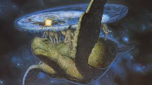
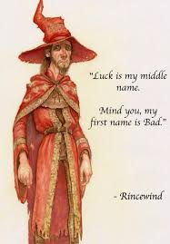
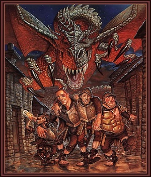
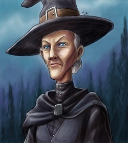
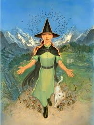
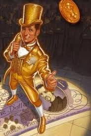
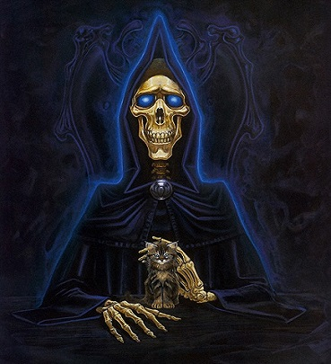

La mayor obra de Terry Pratchet se ubica en un mundo plano con forma
de disco, pero no sólo eso, el disco reposa en los hombres de cuatro elefantes
de envergadura estelar que a su vez están encima del caparazón de Gran
A'tuin: una tortuga que surca el universo. Quizá la ambientación pueda parecer
esperpéntica pero respondía a las necesidades del autor, en la época en la que se
publicó mundodisco el panorama estaba plagado de copias baratas de El señor
de los anillos, de roles estereotipados en la fantasía, de enanos que comían ratas
y amazonas guerreras que entraban al combate sin más armadura que un
trapito.
Terry Prattchet quería crea algo distinto, quería criticar la fantasía y
hacerse nuevas preguntas: si los enanos comían ratas ¿ donde las compraban?¿
cómo las cocinaban? ¿ Que hacían los dragones con los montones de oro amasados?
¿ Cómo era posible que en un mundo sin cepillos de dientes los héroes
siempre tengan una dentadura perfecta? Este tipo de preguntas no cabían en un
universo al uso, necesitaba un mundo surrealista para abordar la fantasía desde
una perspectiva realista, necesitaba evadirse de nuestro mundo, huir a lomos de
Gran A'Tuin para poder observar nuestra realidad sin entrar en cólera. Y es que
precisamente el punto fuerte de este autor era ése, la dura crítica a la realidad,
desde la perspectiva de un mundo que se rige por leyes mágicas y deja las leyes
físicas como una serie de recomendaciones, Prattchet abordó todos los temas
posibles: desde la esclavitud al feminismo, del fútbol a la prensa, del fenómeno
beatle al inicio del cine, de las iniciativas del software libre a la dictadura de las
oligarquias. Nada escapaba de su punto de vista crítico e irónico.
Los más de cuarenta libros que componían mundodisco narran sucesos en
torno a varios personajes principales, cada uno de los libros criticaba un tema
inmerso en una historia que pertenecía a alguna saga y a su vez cada una de las sagas ponía el foco sobre temas concretos.
Sagas y personajes
En el centro de la gran ciudad de Ankh-Morpock se encuentra la universidad
invisible, la única universidad más grande por dentro que por fuera, en ella viven
los magos del mundodisco: inicialmente personas sanguinarias aficionadas al
ascenso mediante el asesinato, tras un par de altercados con un rechicero(cómo
un hechicero pero al cuadrado) los magos de la universidad invisible se dedican
generalmente a no hacer magia, cosa que les da muy bien, sin embargo en
ocasiones no pueden evitar trastocar el tejido del universo creando así grandes
problemas relacionados con tentáculos y lluvias de sardinas en lata.

El principal protagonista de la saga es el mago Rincewind, quien es descrito como
tan dado a la magia como los peces al alpinismo. Rincewind es un cobarde con
una habilidad increíble para atraer los problemas y se especializa en resolverlos
de la mejor manera: huyendo . A través de Rincewind y sus veloces piernas
Prattchet aprovecha para tratar temas como:
Los ideales
—Pero hay causas nobles por las que morir—dijo Mariposa
—¡No, no las hay! ¡Porque sólo tienes una vida, y puedes encontrar
otras cinco causas a la vuelta de cualquier esquina!
El liderazgo
“Siempre que oigais a un hombre gritar: adelante valientes camaradas.
Vereis que es el que está detrás de una roca enorme y
lleva el único casco a prueba de flechas”
Esta saga esta dedicada de manera expresa:
Puede que la
llamen la “guardia de
palacio”o “la patrulla”. Sea
cual sea el nombre , su función
en cualquier obra de fantasía
heroíca es siempre la misma:
Más o menos a la altura del
capitulo tres entran a saco en
una habitación, van atacando
al héroe de uno en uno, y
mueren por orden. Nadie les
pregunta nunca si es eso lo
que quieren hacer.

Esta saga nos mete en la piel de la guardia nocturna de la ciudad más cosmopolita
del disco, Ankh-Morporck, la guardia nocturna es un grupo compuesto
por: El obeso sargento colon, el grotesco cabo Nobby Nobbs( la única persona que
necesita un carnet que indique que pertenece a la raza humana) y el alcohólico
y cínico capitán, Samuel Vimes. La guardia nocturna se limita a patrullar por la
noche evitando meterse en líos.
Hasta que un día llega un joven que sorprendentemente
quiere unirse a la guardia de manera voluntaria: El agente zanahoria será el primer joven que se
aliste en la guardia en estado de sobriedad.
Un hombre de dos metros que asegura que es enano de adopción y cuya nobleza
y sentido del deber le llevará a mostrar a la guardia que si uno ve una pelea
de bar no debe pedir otra cerveza y esperar a que termine para arrestar a los
perdedores, sino pararla por mucho que te superen diez a uno, sin embargo, el
auténtico protagonista de esta saga es el primero capitán, más adelante comandante e incluso
duque, Samuel Vimes, quien con la llegada de zanahoria empezará a abandonar
su alcoholismo y a defender la ley con uñas y dientes.En estas novelas de corte
policíaco vemos a Vimes atacar contra:
La injusticia social:
“ Aunque vivir en una chabola te hacía sospechoso de ser un
delincuente al parecer poseer una calle llena de ellas hace que te
inviten a los mejores eventos sociales.”
La tradición:
“Aquello también tenía lógica. Las cosas se hacían porque se
habían hecho siempre, y la explicación era: Pero es que siempre
lo hemos hecho así. Un millón de personas muertas no pueden
estar equivocadas.”
La ley:
"Hay dos tipos de personas que se ríen de la ley:
Quienes la violan y quienes la escriben"

No sólo los hombres pueden hacer magia, la saga de las brujas nos pone en
la piel de tres brujas y sus vivencias. A través de la mirada del personaje principal:
yaya ceravieja, una bruja poderosísima con un cinismo exacerbado.
Las brujas son a los magos lo que el campo de batalla al tablero de ajedrez, allí donde los
magos no usan la magia y se contentan con recibir sus siete comidas diarias las
brujas están empeñadas en ayudar a la gente a mejorar, algunos de sus temas
son:
La naturaleza humana:
“Sólo nosotros, las razas superiores podemos asesinar. Esa es
una de las cosas que nos distinguen de los animales.”
El espiritismo:
“No apruebo eso de tontear con lo oculto. En cuanto empiezas
a tontear con lo oculto empiezas a creer en espíritus y cuando
empiezas a creer en espíritus empiezas a creer en demonios,
y antes de que te des cuenta ya estás creyendo en dioses. Y
entonces sí que te has metido en un buen lío”.
La lucha por el cambio:
“No se puede ir por ahí construyendo un mundo mejor para la
gente. Sólo la gente puede construir un mundo mejor para la
gente. Si no, es solamente una jaula.”

Una saga destinada a un público infantil en apariencia pero que esconde detrás de bastidores algunos de los mensajes más profundos que salieron del teclado de Pratchett.
Narra las peripecias de la joven Tiffany Dolorido, una niña de campo que comienza como aprendiz de bruja y siguiendo un camino que en ocasiones es pura parodia de la saga
Harry Potter va creciendo a lo largo de los libros hasta ser una bruja hecha y derecha, algunos de sus temas son:
Las leyendas:
“Los cuentos no querían que pensaras, sólo que creyeras en lo que te contaban…”
La responsabilidad:
“-Dime por qué sigues queriendo ser bruja, teniendo en cuenta lo que le pasó a la señora Snapperly.
-Para que ese tipo de cosas no vuelvan a suceder.”
El poder:
Era demasiado fácil deslizarte a pequeñas crueldades descuidadas porque tenías poder y las otras personas no, demasiado fácil pensar que las otras personas
no importaban mucho,demasiado fácil pensar que ideas como el bien y el mal no se aplicaban a ti.
Al final de ese camino estabas babeando y chocheando completamente sola en una casa de jengibre, dejándote crecer verrugas sobre la nariz.
Humédo Von Mustachen es el pícaro arquetípico, un vividor que salta de un escándalo a otro dejando a todo aquel con quien se topa un poco más pobre.
Un estafador por afición que disfruta manipulando la naturaleza codiciosa de los humanos para que juegue en su contra, al menos hasta que es detenido por la guardía de la ciudad y el gobernante le expone una curiosa elección.
O trabaja como funcionario en la oficina de correos o la horca. A pesar de que los temas de estos libros se suelen basar en cosas mundanas y aparentemente poco interesantes, como la gestión de un banco, el servicio de correos o el flujo de transportes diarios en una urbe.
La personalidad de Húmedo y las frecuentes conjuras que se encadenan en Ankh.Morporck crean el panorama perfecto para abordar la vida del humano en sociedad y junto con ello temas como:

La opinión pública:
"Recuerda siempre que la multitud que aplaude tu coronación es la misma que aplaudirá tu decapitación.
A la gente le gustan los espectáculos."
Los constructos sociales:
En una isla desierta el oro no vale nada. La comida ayuda a superar la escasez de oro mucho mejor que el oro ayuda a superar la escasez de comida.
Y ya puestos, el oro tampoco vale nada en una mina de oro. El medio de intercambio en una mina de oro es el pico.
La ciudad era un gran lingote de oro.
¿Qué hacía falta para respaldar la moneda? Bastaba con la ciudad. La ciudad dice que un dólar vale un dólar.Era un sueño,
pero a Húmedo se le daba bien vender sueños. Y si podía vendérsele el sueño a la gente suficiente, nadie se atrevía a despertar.
Las finanzas:
—¡Maestre, protesto! ¡La banca no es un juego!
—Querido señor Doblado, es un juego, un juego muy viejo que se llama "A ver hasta dónde cuela”.
Quizás uno de los personajes más curiosos y carismáticos, la muerte de Mundodisco
es una personificación antropomórfica de lo más curiosa, principalmente
porque habla en versalitas, pero además porque es tremendamente eficaz en
su trabajo, siente cierta fascinación por los humanos, y adora a los gatos.

Muchas
de las reflexiones más profundas y filosóficas del autor vienen a través de
los ojos las cuencas oculares de la muerte. Mediante las aventuras de la muerte
y su caballo Binky. Prattchet nos habla de:
La historia:
“ La historia tiene la costumbre de cambiar a las personas que
se creen que la están cambiando a ella.”
La fugacidad:
Esos que ves allí son mortales, estarán en este mundo apenas unos cuantos años, y se los pasan
complicandose la vida.Es fascinante. Sirvete un pepinillo.
La propia muerte:
Todas las cosas que son, son nuestras. pero
tienen que importarnos, porque, si no nos importa nada,
no existimos. Y si nosotros no existimos no queda
nada mas que el olvido, el fin ciego. Por el equilibrio
correcto de las cosas, para devolver lo que una vez
fue entregado, por los prisioneros y por el vuelo de
los pajaros. Señor, ¿que puede esperar la cosecha, si
no importarle al segador?